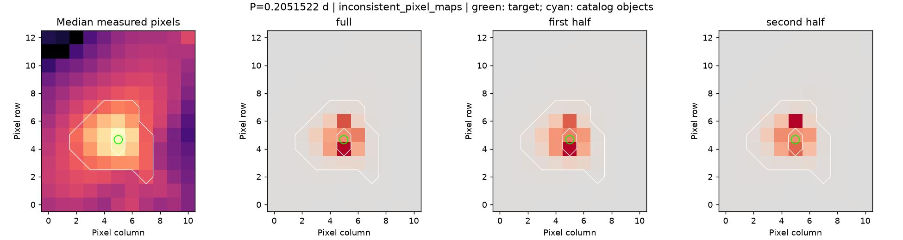
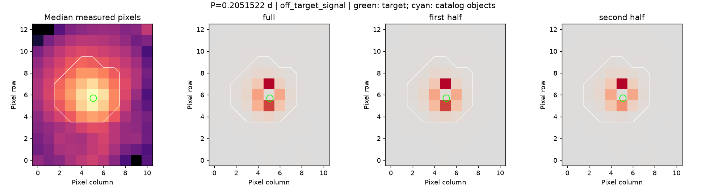

组别：未标注普通目标；分析状态：分析完成。
选定光度周期：0.20515216051384855 天；目录轨道周期：None 天；比较：暂无参考周期。
来源处理：程序建议排除该信号。目录组也需要独立来源核验。


S6 的紧凑信号覆盖目标及上下像素，最大像素在前后半段从下方换到上方；S87 最大像素距目标约 1.30 像素，目标附近仍有信号。仅凭这几个像素不能区分目标变光、未分辨近邻及位置相关影响，不能当成已确认污染。
备注范围和证据校验值。这些补查没有修改原预测，也不是完整的独立标准答案。
目录邻星信息只覆盖 TESS-EBs v1.0。位置相符不排除未分辨近邻；目录周期的半/双倍关系需人工辨别。尚未完成独立裁定，也未查首次发现资格。